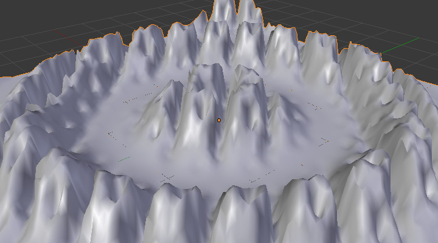

Vertex Weight Mix Modifier¶
{kind=link}
This modifier mixes a second vertex group (or a simple value) into the affected vertex group, using different operations.
Quan trọng
This modifier does implicit clamping of weight values in the standard (0.0 to 1.0) range. All values below 0.0 will be set to 0.0, and all values above 1.0 will be set to 1.0.
Tùy Chọn -- Options¶
- Nhóm Điểm Đỉnh A -- Vertex Group A
- The vertex group to affect.
- Trọng Lượng A Mặc Định -- Default Weight A
- The default weight to assign to all vertices not in the given vertex group.
- Nhóm Điểm Đỉnh B -- Vertex Group B
- The second vertex group to mix into the affected one. Leave it empty if you only want to mix in a simple value.
- Trọng Lượng B Mặc Định -- Default Weight B
- The default weight to assign to all vertices not in the given second vertex group.
- Chế Độ Pha Trộn -- Mix Mode
How the vertex group weights are affected by the other vertex group's weights.
- Replace weights
- Replaces affected weights with the second group's weights.
- Add to weights
- Adds the values of Group B to Group A.
- Subtract from weights
- Subtracts the values of Group B from Group A.
- Multiply weights
- Multiplies the values of Group B with Group A.
- Divide weights
- Divides the values of Group A by Group B.
- Hiệu -- Difference
- Subtracts the smaller of the two values from the larger.
- Trung Bình -- Average
- Adds the values together, then divides by 2.
- Mix Set
Choose which vertices will be affected.
- All vertices
- Affects all vertices, disregarding the vertex groups content.
- Vertices from group A
- Affects only vertices belonging to the affected vertex group.
- Vertices from group B
- Affects only vertices belonging to the second vertex group.
- Vertices from one group
- Affects only vertices belonging to at least one of the vertex groups.
- Vertices from both groups
- Affects only vertices belonging to both vertex groups.
Quan trọng
When using All vertices, Vertices from group B or Vertices from one group, vertices might be added to the affected vertex group.
Influence/Mask Options¶
- Global Influence
The overall influence of the modifier (0.0 will leave the vertex group's weights untouched, 1.0 is standard influence).
Quan trọng
Influence only affects weights, adding/removing of vertices to/from vertex group is not prevented by setting this value to 0.0.
Vertex Group Mask¶
- Vertex Group Mask
- An additional vertex group, the weights of which will be multiplied with the global influence value for each vertex. If a vertex is not in the masking vertex group, its weight will be not be affected.
Chất Liệu Màn Chắn -- Texture Mask¶
- Chất Liệu Màn Chắn -- Texture Mask
An additional texture, the values of which will be multiplied with the global influence value for each vertex.
This is a standard texture data-block control. When set, it reveals other settings:
- Tọa Độ Chất Liệu -- Texture Coordinates
How the texture is mapped to the mesh.
- Địa Phương -- Local
- Use local vertex coordinates.
- Toàn Cầu -- Global
- Use vertex coordinates in global space.
- Vật Thể -- Object
Use vertex coordinates in another object's space.
- Vật Thể -- Object
- The object to be used as reference for Object mapping.
- UV
Use a UV map's coordinates.
- Ánh Xạ UV -- UV Map
- The UV map to be used for UV mapping.
- Dùng Kênh -- Use Channel
Which channel to use as weight factor source.
- Red/Green/Blue/Alpha
- One of the color channels' values.
- Cường Độ -- Intensity
- The average of the RGB channels (if RGB(1.0, 0.0, 0.0) value is 0.33).
- Giá Trị -- Value
- The highest value of the RGB channels (if RGB(1.0, 0.0, 0.0) value is 1.0).
- Sắc Thái -- Hue
- Uses the hue value from the standard color wheel (e.g. blue has a higher hue value than yellow).
- Độ Bão Hòa -- Saturation
- Uses the saturation value (e.g. pure red's value is 1.0, gray is 0.0).
Ghi chú
All of the channels above are gamma corrected, except for Intensity.
Ghi chú
You can view the modified weights in Weight Paint Mode. This also implies that you will have to disable the Vertex Weight Mix Modifier if you want to see the original weights of the vertex group you are editing.
Ví Dụ -- Example¶
Using a Texture and the Mapping Curve
Here we are going to create a sort of strange alien wave (yes, another example with the Wave Modifier... but it is a highly visual one; it is easy to see the vertex group effects on it...).
So as above, add a 100×100 grid. This time, add a vertex group, but without assigning any vertex to it -- we will do this dynamically.
Add a first Vertex Weight Mix Modifier, set the Vertex Group A field with a Default Weight A of 0.0, and set Default Weight B to 1.0.
Leave the Mix Mode to Replace weights, and select All vertices as Mix Set. This way, all vertices are affected. As none are in the affected vertex group, they all have a default weight of 0.0, which is replaced by the second default weight of 1.0. And all those vertices are also added to the affected vertex group.
Now, select or create a masking texture. The values of this texture will control how much of the "second weight" of 1.0 replaces the "first weight" of 0.0... In other words, they are taken as weight values!
You can then select which texture coordinates and channel to use. Leave the mapping to the default Local option, and play with the various channels...

Using Red. |

Using Saturation. |
{kind=link}
{kind=link}
Do not forget to add a Wave Modifier, and select your vertex group in it!
You can use the weights created this way directly, but if you want to play with the curve mapping, you must add the famous Vertex Weight Edit Modifier, and enable its Custom Curve mapping.
By default, it is a one-to-one linear mapping -- in other words, it does nothing! Change it to something like in Fig. Custom mapping curve., which maps (0.0, 0.5) to (0.0, 0.25) and (0.5, 1.0) to (0.75, 1.0), thus producing nearly only weights below 0.25, and above 0.75: this creates great "walls" in the waves...

A customized mapping curve. |
Custom Mapping disabled. |

Custom Mapping enabled. |
The blend-file, TEST_4 scene.